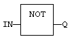
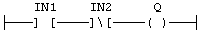
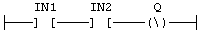

Operator
Performs a Boolean negation of the input.
IN: BOOL Boolean value.
Q: BOOL Boolean negation of the input.
|
IN |
Q |
|
0 |
1 |
|
1 |
0 |
In FBD language, the block NOT can be used. Alternatively, you can use a link terminated by a o negation. In LD language, negated contacts and coils can be used. In IL language, the N modifier can be used with instructions LD, AND, OR, XOR and ST. It represents a negation of the operand. In ST language, NOT can be followed by a complex Boolean expression between parentheses.
Q := NOT IN;
Q := NOT (IN1 OR IN2);
Explicit use of the NOT block:


Negated contact: Q is: IN1 AND NOT IN2:

